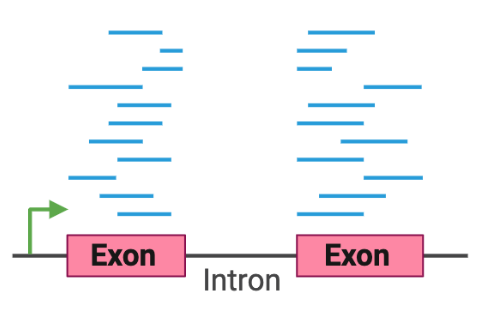
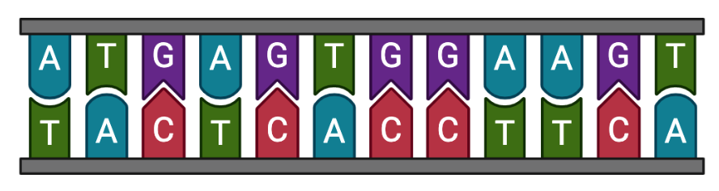
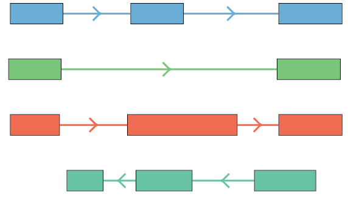

This website is intended as a resource accompanying the publication Isoform-resolved transcriptome of the human preimplantation embryo, published in Nature Communications.
The website contains the following sections:
- Genome browser, which contains a genome browser session to explore the data
- Isoform explorer, which allows users to interactively explore isoforms for genes of interest
- Data files, where users can download all relevant processed data files
Genome browser
The interface below allows users to explore the full isoform-resolved dataset, including RNA-expression across 1C to blastocyst stages; processed human embryo ATAC-Seq (Liu et al.). and CUT&RUN (Xia et al.) data; and multiple publicly available tracks (e.g. evolutionary conservation, repetitive element location, ENCODE, etc.)The session is also available on the UCSC Genome Browser.
Isoform explorer
The interface below allows users to interactively explore isoform-level predictions of biological function for each gene, and view both isoform and gene expression across the samples in our dataset.The isoform explorer is also available at: https://rstudio-connect.hpc.mssm.edu/human-embryo-transcriptome/
Data files
Below, users can access all processed long- and short-read RNA-Seq data generated for this study, including isoform-level predictions of biological properties.
For a complete explanation of the data, please see our Methods and the source code on GitHub. Raw sequencing data is available on GEO at GSE190548.
Isoform-resolved transcriptome

Isoform coordinates (GTF)
Coordinates of known and novel embryo isoforms on Ensembl GRCh38 genome.

Isoform sequences (FASTA)
Nucleotide sequences of known and novel embryo isoforms (exons only).

Isoform structural classes
Isoform classification compared to known transcripts (using TALON/SQANTI3).
Coordinates of known and novel embryo isoforms on Ensembl GRCh38 genome.
Nucleotide sequences of known and novel embryo isoforms (exons only).
Isoform classification compared to known transcripts (using TALON/SQANTI3).
Isoform biological properties
The section below contains links to files with predictes isoform-level biological properties.
Predicted protein domains for each predicted protein-coding isoform.
Expression and splicing
The section below contains links to files containing estimated expression and splicing of isoforms throughout human preimplantation development.